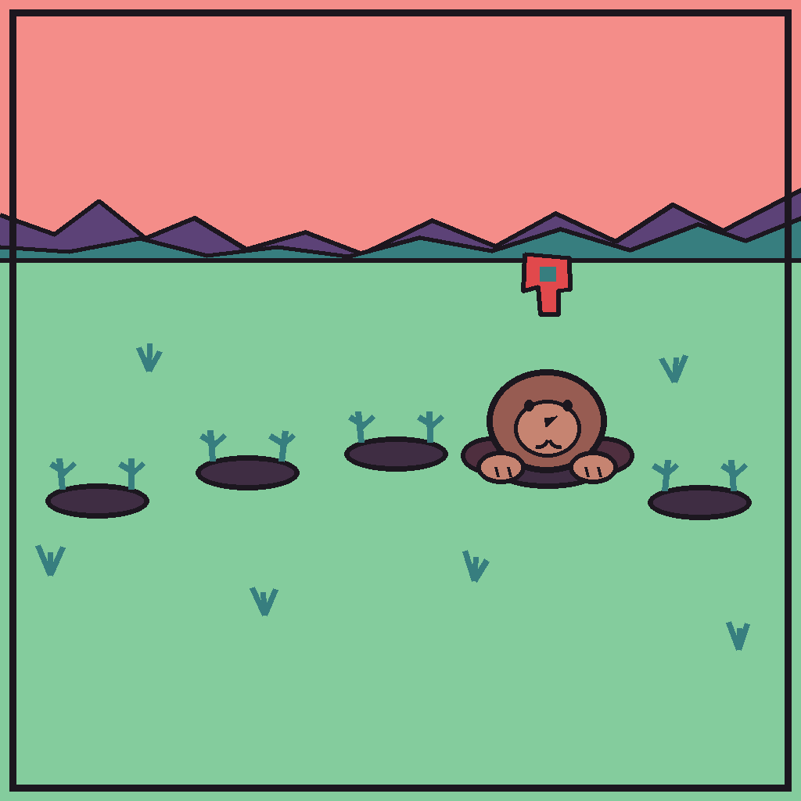

← Back to Index
Mole Rhythm
Mole Rhythm reimagines whack-a-mole as a five-finger music game. Five holes map directly to thumb, index, middle, ring, and little finger. Players bend the matching finger when a mole reaches its target pose, using character motion rather than a falling-note track to read the rhythm.
The chart pipeline analyzes a fixed music track offline, then applies deterministic density, repetition, weaker-finger, and two-finger constraints. This keeps output reproducible and allows Normal, Easy, and Very Easy variants without modifying the source chart.

Key Work
- Reframed whack-a-mole as a five-lane rhythm experience mapped directly to five fingers
- Defined novice-friendly chart constraints for density, repetition, weak fingers, and two-finger events
- Built a reproducible offline beat-analysis and chart-generation workflow
- Simplified the audio plan to one master track and visual judgment when the source material changed
- Designed DSP-timed judgments, adjustable windows, calibration, and keyboard-to-glove input parity
Key Features
- Five animated mole lanes with finger-specific cues and hit, miss, combo, and accuracy feedback
- Normal, Easy, and Very Easy chart variants generated without overwriting source data
- Keyboard 1-5 simulation and five-finger wearable input behind one judgment system
My Role
- Interaction Designer: Defined finger mapping, readable anticipation, and novice ergonomics
- System Designer: Set chart rules, timing behavior, feedback, and difficulty boundaries
- Prototype Reviewer: Simplified the concept when the available music did not support the original plan
Current Status
- Playable prototype with deterministic charts and multiple difficulty variants
- Offline analysis, Unity import, and core judgment logic are implemented
- Final glove false-trigger tuning, audio-offset calibration, UI art, and complete Play Mode acceptance remain in progress